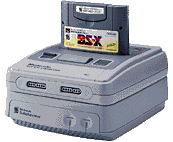

|
 |
 |
Satellaview+
Release Date: ETA
Price: Free :)
|

How to use SoundLink+
FOR WINDOWS ONLY
Download the SoundLink+ client and upzip the folder.
Afterwards open the "SoundLink+.exe" and then
it should show in your taskbar (where the Windows
icon is and where all your apps that are open are)
and if SoundLink+ is streaming, you should hear SoundLink+!
|
|
 戻る/Back 戻る/Back
|